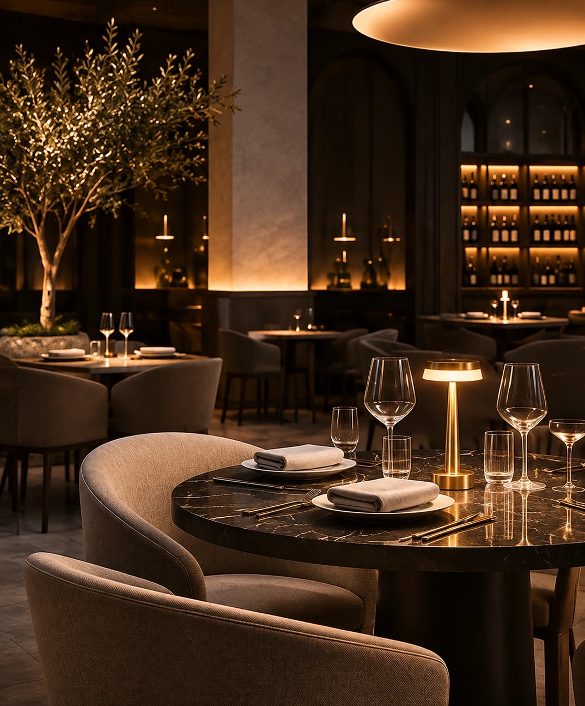
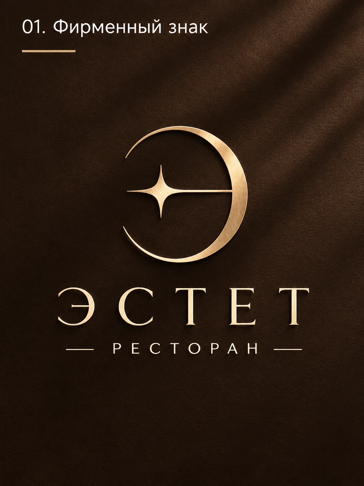
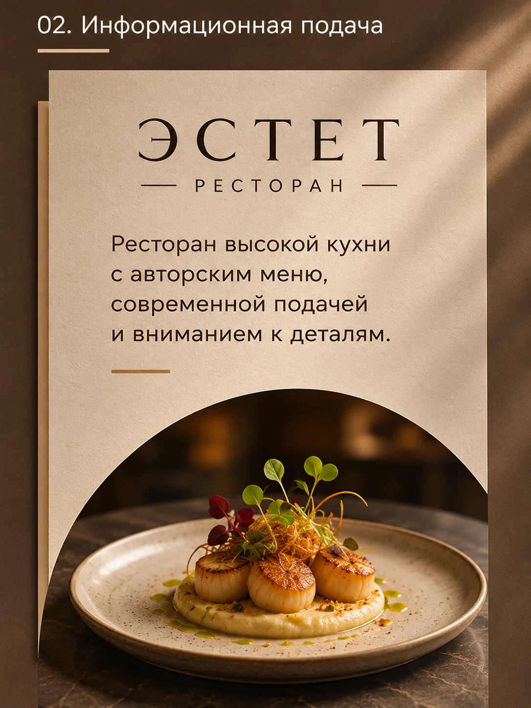
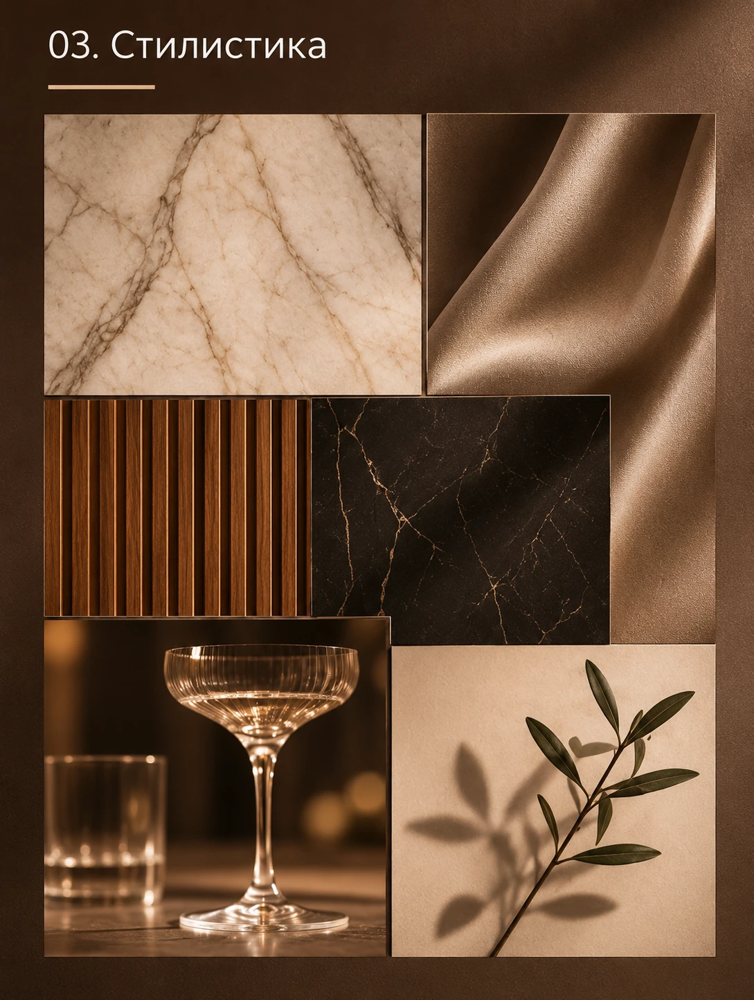
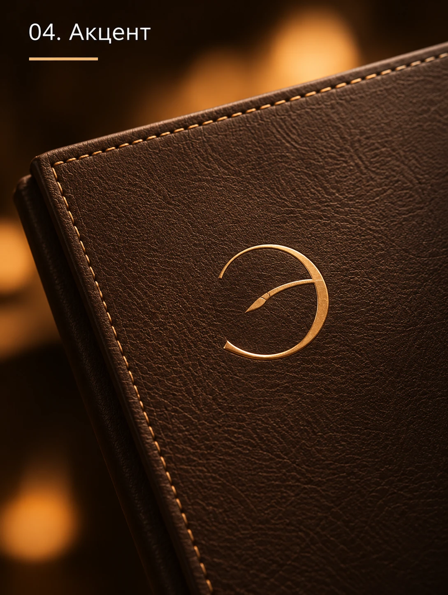
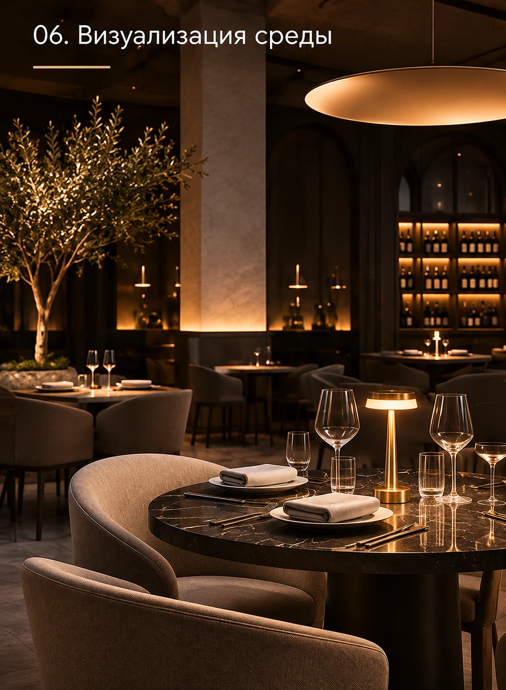
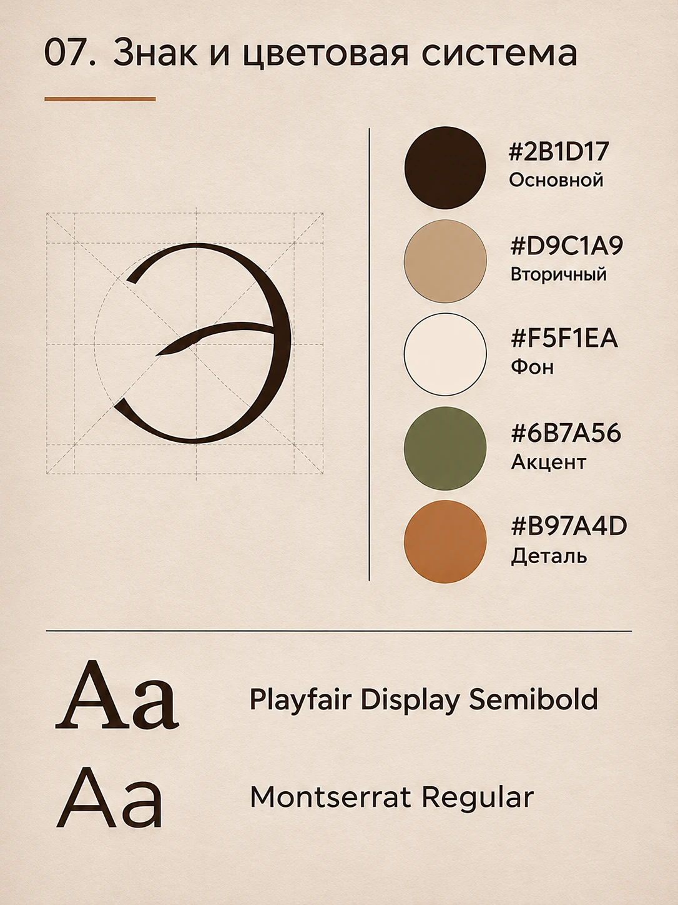
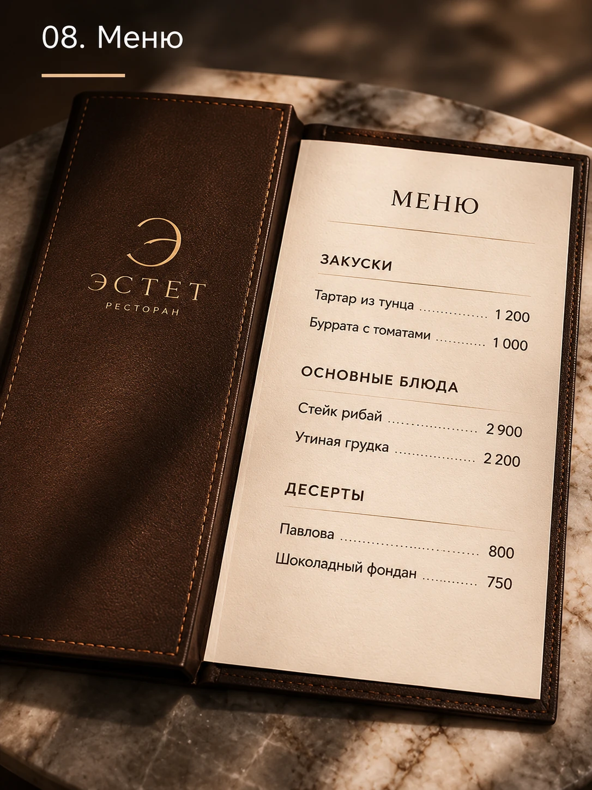

Задача
Разработать визуальный образ пространства «Эстет», с акцентом на сдержанную роскошь, выразительные фактуры и теплую атмосферу.
Учебный проект / фирменная концепция пространства
Айдентика ресторана «Эстет»: фирменный знак, цветовая система, меню и визуальная среда.

Архив проекта / Selected material
От логотипа и образа аудитории к визуальной подаче пространства «Эстет» в среде.








Для обновлённой презентации подготовлены отдельные визуальные сцены в эстетике проекта «Эстет». Это концептуальные изображения для портфолио, а не фотографии реализованного интерьера или исходные макеты.